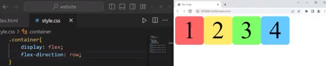
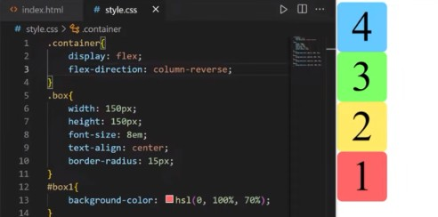
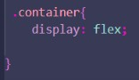
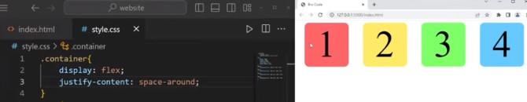
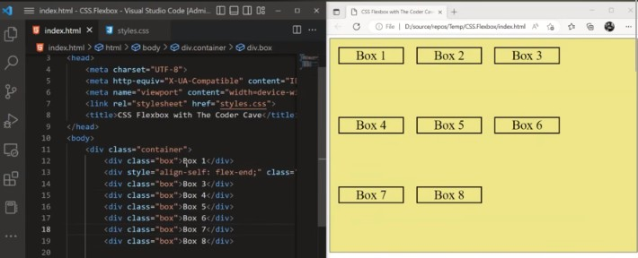
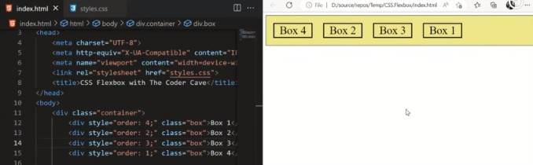
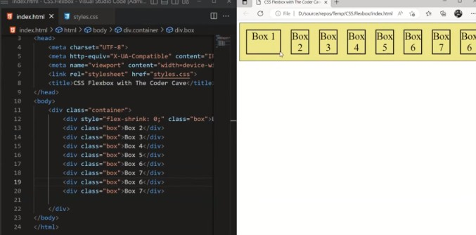

There are different ways of arranging the order of elements with Flexbox. Such as the following:

Row-reverse

Column

Column-reverse

Flex-direction: Flexbox allows you to set a directive—for example, defining whether elements should be displayed in rows or columns. To do this, we use:
Flex-wrap: Controls whether the items within a flex container are arranged in a single line or can be distributed across multiple lines when there is not enough available
Flex-flow: Allows you to combine the two aforementioned properties into a single one.
To enable Flexbox, the command is the following:

There are different ways of arranging the order of elements with Flexbox. Such as the following:


This setting will be the default.
This setting will take the boxes to the right.

This setting align the boxes to the center.

This setting align the boxes to the center.

The same as before, but it takes into account the space surronding the elements.
The same as before, but the space is even.
Another crucial tool flexfox provides is the possibility of aligning one of the elements independently from the others. This will need a class to work.

Controls the visual sequence of flex items without changing the HTML order. Default is `0`; lower numbers appear earlier and higher numbers appear later (negative values are allowed).

This setting align the boxes to the center.
Defines how much a flex item can shrink when there isn't enough space along the main axis. Default is `1` (can shrink); `0` prevents it from shrinking below its base size.
